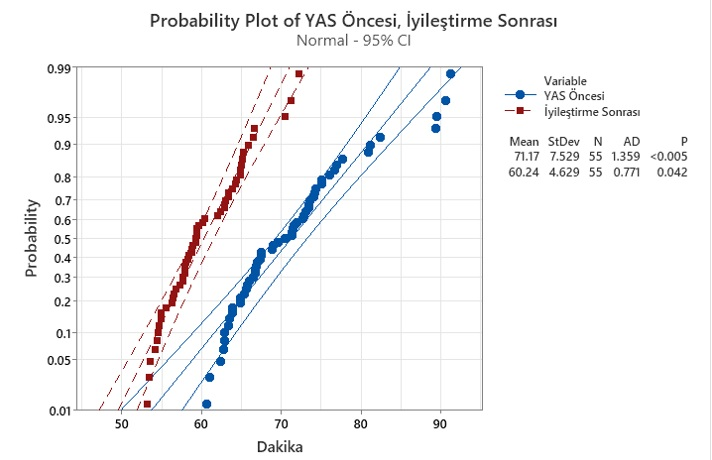
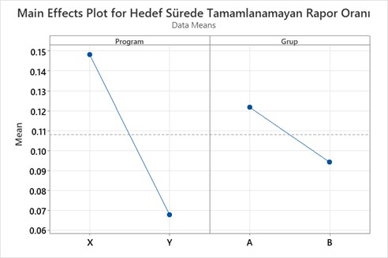

Yalın Altı Sigma ve Müşteri Deneyimi Üzerine Proje
Yalın ve Altı Sigma, günümüzde hem imalat hem de hizmet sektörleri içerisinde çeşitli şirketlerde en yaygın kullanılan iki yönetim stratejisidir. Şirketlerin daha yüksek rekabet avantajları, daha iyi ürün kalitesi ve müşteri memnuniyetine giden yolculuğunu kolaylaştıran etkili sürekli iyileştirme programları olarak algılanır ve uygulanırlar.
Yalın üretim, dünyanın en saygın otomobil şirketlerinden biri olan Toyota'dan gelmektedir. Yalın'ın ilk formülasyonu, Taiichi Ohno tarafından başlatılan Toyota Üretim Sistemidir. Yalın'ın geliştirilmesinin arkasındaki ana etken; israfın ortadan kaldırılmasıydı. Öte yandan, Motorola Corp.'da kurulan Altı Sigma, her milyonluk üretim de hata oranını 3,4 hataya düşürmeyi hedefleyen süreç ve kalite iyileştirmeye yönelik sistematik ve veriye dayalı bir yaklaşımdır. Altı Sigma'nın gelişimini yönlendiren temel konu, çok sayıda bileşene sahip karmaşık ürünler üretilirken kalite iyileştirme ihtiyacıydı.
Yalın ve Altı Sigma farklı köklerden gelse de, aslında sinerjiktirler ve müşteri hizmetleri, ürün, süreç veya iş gücünün eğitimi gibi konularda, kaliteye ulaşmada birbirlerini desteklerler (Pepper ve Spedding, 2010). Altı Sigma’nın değişkenleri azaltan yaklaşımı ile Yalın Üretimin israfı ortadan kaldırmak isteyen felsefesi, projenin temellerini oluşturmuştur.
Bu çalışmada, hizmet olarak yazılım (SaaS) sunan kripto para borsası firmasında B2C müşteri memnuniyeti skorlarında Yalın Altı Sigma ile yükseliş hedeflenmiştir. Firma ve Müşteri Deneyimi ile ilgili Yalın Altı Sigma öğretileri doğrultusunda DMAIC süreci uygulanmıştır. Uygulamada izlenen adımlar ve kullanılan teknikler sonucunda elde edilen bulgular özetle şu şekildedir:
aşamasında kullanıcılardan gelen anket bilgilerinden yola çıkarak projenin genel hatları, hedefleri, incelenebilecek alanların genel haritası çıkarılmıştır. İlk olarak firma müşterileri tarafından anket aracılığıyla ölçümlenen müşteri memnuniyet skoru, NPS ve CES skorlarının aylık olarak son 6 ayın trendi çıkarılmıştır.
Proje Müşteri Memnuniyet Grafiği:
Bu bilgi ile birlikte firmanın devam eden müşteri memnuniyeti skoru düşüşü gösterilmiştir. Sonrasında proje sözleşmesi hazırlanıp, gerekli görevlerin tanımlanması, tahmini süre, uzman kara kuşak ve sponsorların belirlenmesi gibi başlıklar hazırlanmıştır. Son olarak tanımlama adımında anketlerden yola çıkarak müşterinin sesi çıkarılmıştır. Bu sonuçlara göre sırayla hesap doğrulama, bilgi eksikliği ve temsilci kaynaklı problemler kategorileri en çok olumsuz anket dönüşü alan başlıklar olduğu gösterilmiştir.
Hesap doğrulama süreci için tekrardan yapılan incelemeler de ise hesap doğrulama sürecinden mutsuz olan kullanıcıların %87’sinin bu işlemin uzun sürmesinden kaynaklı mutsuz olduğu ortaya çıkarılmıştır. Ayrıca bu sonuçlara göre CTQ’lar belirlenmiştir.
Ölçme aşamasında ilk olarak süreç haritası çıkarılıp sonrasında hesap doğrulama süreçleriyle ilgili data toplama planları hazırlanmıştır. İş yapısı gereği 4 farklı şekilde hesap doğrulama işlemi tamamlanabilmektedir. Bu başlıklar için veriler ayrı ayrı toplanıp, farklı başlık altında incelenmeleri sağlanmıştır. Bu başlıklar şu şekildedir;
· Hukuki zorunluluk olarak başlayan bilgileri uygun olan kullanıcılar (HZ1)
· Hukuki zorunluluk olarak başlayan bilgileri yetersiz/hatalı olan kullanıcılar (HZ2)
· Kendi rızasıyla süreci başlatan bilgileri uygun olan kullanıcılar (KR1)
· Kendi rızasıyla süreci başlatan bilgileri yetersiz/hatalı olan kullanıcılar (KR2)
Kısaltmalar: 
Proje Tanımsal İstatistik Sonuçları :
Bu bilgilerden yola çıkarak HZ1 (54.4 saat) ve KR1(60.8 saat) de hedef olarak belirlenen 72 saatin altında kaldığı, HZ2 (73.2 saat) ve KR2 (87.9 saat) başlıklarının ise hedefin üzerinde kaldığı görüntülenmiştir.
Analiz aşamasında ilk olarak takım ile beraber balık kılçığı analizi yapılmış hesap doğrulama sürecinden mutsuz olan kullanıcıların kök sebeplerini bulabilmek adına görüşmeler sağlanmıştır. Bu görüşmeler sonrasında süreçle ilgili olabilecek 5 adet soru sorulmuş, bu soruların 3 ünden sürece etki edebilecek, iyileştirme yapılabilecek başlıklar belirlenmiştir. Bu hipotezler şu şekildedir;
1. Hesap doğrulama süresi ile müşteri memnuniyeti arasında bir ilişki var mı?
2. Hukuki zorunluluk taleplerinin alışkanlık olarak önceliklendirilmesinin, kendi rızası ile başlatılan hesap doğrulama sürelerinin uzaması ile arasında bir ilişki var mı?
3. Destek birimiyle iletişim eksiklikleri ile hesap doğrulama süresinin artışı arasında bir ilişki var mı?
İlk soru için hazırlanan ANOVA şu şekildedir;
analizinde müşteri memnuniyeti ile hesap doğrulama süreci arasında güçlü bir bağ olduğu R-sq 77.13%, kurulan hipotezin kabul edilmesi ile sonuçlanmıştır (P değeri (0.012)< 0.05). Bu analizden yola çıkarak hesap doğrulama sürelerinde yapılacak iyileştirmelerin ve gelecek soruların alt zemini hazırlanılmış ve devam edilmiştir.Anova Analizi:
İkinci soru için regresyon analizi kullanılmış, analiz sonucunda gözlemlenen P değeri (0.000)< 0.05 olduğu için Ho hipotezi reddedilmiş ve alternatif olarak geliştirilen H1 hipotezi kabul edilmiştir. R-sq değerinin 47.9% olması ise etkileşimin gücünü göstermektedir.
Regresyon Analizi:
Son soru için ise alışkanlık ölçümlenmesi gri bir alan olduğu için beyin fırtınası yapılmış ve 15 er adet rastgele dosya seçilmiş ve iki örneklem t-test kullanılmaya karar verilmiştir. Bu süreçte Türkiye Finans Birimi’ne gelen iki çeşit raporun tamamlanma süreleri ve kabul edilme sürelerinin karşılaştırılması yapılmıştır. Yapılan işlem olarak herhangi bir farklılık olmadığı halde arada oluşabilecek zaman farkları “zaman kaybı” olarak kabul edilmiştir. Rapor hazırlama süresi yapılan inceleme ve firma içi diğer departmanlarla etkileşim sonrası ideal süre 5 saat olarak kabul edilmiştir. Yapılan analiz sonucunda tüm süreç ve yapılan işlemlerin aynı olduğu raporlama sürecinde raporun cinsine göre ortalama süreler arasında 8.27 saatlik bir fark olduğu ortaya çıkmıştır. P değeri < 0.05 olduğu için alternatif hipotez kabul edilmiştir.
T- Test:
İyileştirme aşamasında firma ile görüşmeler sağlanmış taraflardan gelen iyileştirme seçenekleri incelenmiş ve listelenmiştir. Rapor önceliklendirme problemi ile ilgili iyileştirme yapılabilecek iki ana başlık belirlenmiştir. · Yazılım desteğiyle gelen raporları tarih sıralamasına göre kabul etme zorunluluğu getirilmesi · Çalışan performanslarına göre takımlar ayarlanması Bu iki başlığın incelenmesi için deneysel tasarım uygulanmış ve çalışan performanslarına göre takım ayarlanması çözümü yeterli bir etki bırakmazken sürecin yazılım desteğiyle düzenlenmesi başlığı kabul edilmiştir. Bu çözümle ilgili pilot çalışma yapılmış sonuçlar paylaşıldıktan sonra firmadan değişim onayı alınmıştır.
Deneysel Tasarım Verileri:
Deneysel Tasarım Sonuçları: 
İyileştirme aşamasında kabul edilen diğer biz çözüm ise çağrı merkezi çalışanlarında yaşanan bekleme ve iletişim eksikliği için süreç değişimi planlanmış ve programla desteklenmiştir. Bunun ile ilgili yapılan analizler sonucu pilot çalışmada 3.5 saatlik bir süreç hızlanması sağlanmıştır. Aynı şekilde bu uygulama da firma tarafından onaylanmıştır.
Pilot Çalışma Öncesi Sonrası Sonuçları Çözüm 1:
Son olarak kontrol aşamasında değişimlerin takibi ve yönetilmesi için gerekli sistemler kurulmuş ve 2 aylık süreçte müşteri memnuniyeti skorların %12’lik bir yükselme görülmüş, rapor hazırlama süreleri genel olarak 60.2 saate çekilmiş ve müşteri memnuniyeti anketlerinde hesap doğrulama süreci ile ilgili olan başlıkta ise %34’lük müşteri memnuniyeti artışı sağlanmıştır. Tekrar eden raporlarda ise CSAT skoru %56.6 oranında artış göstermiştir.
Proje Öncesi Sonrası Hesap Doğrulama Süreç Değişimleri: 
Proje kapsamında firmanın koyduğu %80 müşteri memnuniyeti skoruna erişim sağlanamamış %64 olan müşteri memnuniyet skoru %76’ya çekilmiştir.
Proje Öncesi Sonrası Hesap Doğrulama Süreç Değişimleri Box Plot:
Firmanın Yalın Altı Sigma’yı bir kültür olarak benimsememiş olması, en temel ihtiyaç olan kuşak sahibi çalışan/yönetici bulunmaması belirlenen hedefe ulaşılamamasında büyük etken olmuştur. Projenin ana amaçlarından bir diğeri olan firmaya yalın altı sigma kültürünü tanıtmak, işlevselliğini göstermek ve sürdürülebilirliğini sağlamak kısmında ise başarılı olmuştur. Firma kısıtlı erişim ve yetkilendirmelere rağmen sürdürülen bu projeden memnun kalmış ve Yalın Altı Sigma’yı kültür olarak benimsemek için gerekli incelemeleri başlatmıştır. Bu tür çalışmaların firmanın bir kültürü olarak kabul görmesi, sürdürülebilir bir hale gelmesi ve yönetimin devamlı destek vermesi gerekliliği sağlandığı takdir, işletmeye uzun dönemde katkı sağlaması beklebilir. Bu projeler yönetim tarafından devam eden ve yaşayan bir faaliyet olarak kabul edilmelidir. Proje sürecinde firma tarafından yapılan en büyük kısıtlama, firmanın hizmet olarak sunduğu yazılımla ilgili olabilecek değişimlerin proje kapsamından çıkarılması olmuştur. Hizmet olarak oluşturulan online platformu her ülke aynı şekilde kullanmaktadır bu sebepten dolayı sadece Türkiye verilerinden yola çıkarak, global etki yaratabilecek değişimlerden firma kaçınmıştır. Bu haklı kısıtlama sebebiyle firma ile yapılan yalın altı sigmanın kültür haline getirilmesi görüşmelerinde, Yalın Altı Sigma’nın yazılım geliştirmek için kullanılmasında oluşabilecek artı ve eksiler detaylı bir şekilde ele alınmıştır. Firmaya bu durumla ilgili yalın altı sigma ile çevik yöntemin kesişim noktaları gösterilmiş, Agile Sigma ile ilgili bilgi paylaşımı sağlanmıştır. Dijitalleşme çağında, hizmet olarak yazılım sunan firmalar gün geçtikçe artmaktadır. Bu tip firmalarda yalın altı sigma kullanımının pozitif bir etki bırakabileceği bu çalışmada gösterilmeye çalışılmıştır.
Müşteri memnuniyet puanı (CSAT)
Müşteri memnuniyeti puanı olarak adlandırılan CSAT, çeşitli farklı ölçümler anlamına gelebilir. Basit uyarlamalarda, bir müşterinin bir ürün veya hizmete ilişkin memnuniyetini, tüketim sırasında veya tüketim sonrasında belirli bir ölçekte nasıl derecelendirdiği anlamına gelmektedir. Kullanıcılara basit bir şekilde “Bizimle olan deneyiminizi nasıl değerlendirirsiniz?” sorusu sorulur; 5’li likert ölçeğinde hiç memnun kalmadım ile çok memnun kaldım arası seçenekler sunulur (Grigoroudis & Siskos, 2010). Son olarak ise memnun olan kullanıcıların toplam kullanıcı sayısına bölünmesiyle genel müşteri memnuniyeti skoru bulunmuş olur.
Csat Formülü:
CSAT kullanan şirketler genellikle birden çok hizmet noktasından veri toplamaktadır. Birden çok kaynaktan veri toplama, müşterinin bakış açısından hizmetteki zayıf halkaları bulmak için iş sürecinin farklı bölümlerinin ve noktalarının karşılaştırılmasına olanak tanımaktadır.Net Promosyoncu Puanı(NPS)
Net Promoter Score olarak adlandırılan NPS, Frederick F. Reichheld tarafından 2003 yılındaki makalesinde tanıtılan bir ölçüttür. Daha sonra birden çok vaka çalışmasında, bir hizmeti tavsiye etme isteğinin, tekrar satın almalar ve yönlendirmeler arasında güçlü bir ilişki olduğu sonucuna varmıştır. Reichheld tarafından yapılan araştırmalar, NPS'yi "Hizmeti bir başkasına tavsiye etme olasılığınız nedir?" şeklinde tek bir soru halinde şekillendirilmiş ve bu soruya yanıt 0'dan 10'a kadar bir ölçekte bir puan olarak verilmiştir. Yanıtlar, şekilde gösterilen üç bölüm halinde gruplandırılmıştır. 0 ile 6 arasında verilen cevaplar aleyhte olanlardan, 7 ve 8 pasif müşterilerden ve 9 ile 10 arasındaki puanlar ise destek verenlerden gelmektedir.Net promosyoncu puanının hesaplanma şekli ise aşağıda ifade edildiği gibidir;
NPS Formülü:
Yukarıdaki formül, -100 ile 100 arasında değişebilen bir puana yol açmaktadır. Destekçilerin payını izlemenin amacı, destekçilerin hem satın alma hem de ağızdan ağza pazarlama ile şirketin büyümesini sağlayan en sadık müşteriler olduğu fikrinden kaynaklanmaktadır. Destekleyenler tarafından değer verilen işletmenin güçlü yönlerine ve kötüleyenler tarafından işaret edilen zayıf yönlere odaklanılarak, muhtemelen daha yüksek müşteri sadakatine ulaşma konusunda önemli adımlar atılmış olacaktır (Reichheld, 2003).
Müşteri Çaba Puanı (CES)
Müşteri Çaba Puanı olarak ifade edilen CES, orijinal olarak Customer Effort Score, HBR makalelerinde oluşturulmuştur (Dixon ve diğerleri, 2010). Yapılan araştırmalar müşterileri memnun etmek yerine, müşteriden satın alma veya hizmet kullanımı için gereken çabayı azaltmanın bir şirkete sadakat oluşturmada daha önemli olduğu bulgusunu göstermiştir. Bu metriğin belirlenmesinde "Sorunumu halletmek kolaydı" ifadesine kullanıcıların 1'den 7'ye kadar olan bir ölçekte cevap vermesi beklenmiştir. 7, "Kesinlikle Katılıyorum" anlamına gelir. 5'ten 7'ye kadar olan derecelendirmeler, sunulan hizmetlerin müşterilere kolay çözümler sunduğunu düşünen müşterilerin oranı olarak gruplandırılabilir. Aşağıdaki Şekil 4.3 örnek bir ifadeyi göstermektedir.
CES Örnek Soru:
Bu ifadeye verilen cevaplar doğrultusunda veriler toplandıktan sonra elde edilecek olan müşteri efor skoru aşağıda belirtilen şu formül ile hesaplanabilmektedir.CES Formülü:
Müşterinin Sesi (VoC)
Müşterinin Sesi veya VOC olarak adlandırılan bu adım birçok kalite programının temel kavramlarından birisidir. Kalite hedefi daha iyi, daha tutarlı bir ürün ortaya çıkarmaktır. Bu hedefe ulaştığınızı bilmenin yollarından biri ise müşterilerinizin daha istikrarlı bir şekilde memnun kalmasını sağlamaktır. Bu hedefe ulaşmanın tek yolu müşteriden geri bildirim almaktan geçer. Bu da VOC verilerinin iyileştirme projeleri sırasında, öncesinde ve sonrasında elde edilmesini kritik hale getirir. Başarılı VOC programları proaktiftir ve sürekli geri bildirim alma arzusundadır ve teknoloji, müşteri geri bildirimlerini çeşitli şekillerde almayı olanaklı hale getirir. Geri bildirim almak için bazı yöntemler şunlardır (The Council for Six Sigma Certification.2018):
• Telefon, posta, e-posta veya çevrimiçi anketler,
• Yüz yüze veya çevrimiçi odak grupları,
• Röportajlar,
• Beta veya kullanıcı testi,
• Geri bildirim formları,
• Müşteri şikayetleri,
• Sosyal medya veya site etkileşimi,
VOC, ihtiyaç ve istekleri açıklığa kavuşturmak, bir süreçle ilgili belirli sorunları ortaya çıkarmak veya iyileştirme, müşteri hizmetleri ve pazarlama gündemlerinin düzenli bir parçası olarak araştırılabilir.
Proje Müşterinin Sesi Tablosu:
Proje Müşterinin Sesi Pareto Analizi: 
Müşteri İçin Kritik Kalite Değişkenleri (CTQ)
Kritik Kalite Değişkenleri olarak adlandırılan CTQ’lar bir ürün veya sürecin, müşteriyi memnun etmek için performans standartlarının veya spesifikasyon limitlerinin karşılanması gereken temel ölçülebilir özellikleridir. İyileştirme veya tasarı gayretlerini müşteri gereksinimleriyle uyum içinde tutarlar. CTQ'lar müşteri ( dahili veya harici) tarafından tanımlanan ürün veya hizmet özelliklerini temsil eder. Üst ve alt spesifikasyon limitlerini ve ürün veya hizmetle ilgili diğer faktörleri içerebilirler. Bir CTQ çoğunlukla niteliksel bir müşterinin ifadesinden eyleme dökülebilir, niceliksel bir iş spesifikasyonuna dönüştürülebilir (Kwak ve Anbari, 2006).
Proje CTQ Tablosu:
Süreç Haritalama
Süreç haritaları pek çok altı sigma projesinin hayati bir parçasıdır. Süreç haritaları bir DMAIC projesinin tüm aşamalarında değerli birer araçtır. Her ne kadar iyi süreç haritalarının oluşturulması uzun zaman alsa da bunlar proje boyunca ve proje sonrasında çeşitli amaçlarla tekrar kullanılabilir.
Süreç haritaları sadece basit akış şemaları olmayıp, ekipler belirli bir proje veya aşama için süreç haritası olarak bir akış şeması oluşturmayı tercih edebilmektedir. Süreç haritaları bir sürecin görsel tasvirleridir ve genellikle süreç içerisindeki tüm aktiviteleri ve alınan kararları içermektedir. Sürecin çeşitli seviyelerini gösterebilirler. Kurumsal süreç haritaları ve ayrıntılı süreç haritaları olmak üzere iki şekilde oluşturulabilirler.
İş Süreçleri Yönetimi (BPM), tutarlı sonuçlar elde etmek ve iyileştirme fırsatlarından yararlanmak için bir kuruluşta işin nasıl yapıldığını denetleme sanatı ve bilimidir (Dumas ve diğerleri, 2017). Süreç haritalaması süreçlerdeki girdileri, çıktıları ve eylemler arasındaki ilişkileri gösteren görsel bir tablodur. Süreç haritalamasının amacı, süreç akışlarını grafiksel olarak tek bakışta oluşturmaktır. Süreç haritalama, süreç türlerine dayanan ortak sembollere sahiptir.
Proje Süreç Haritası:
Balık kılçığı diyagramı (Ishikawa)
Balık kılçığı diyagramı (Ishikawa) diyagramı olarak da adlandırılmaktadır) kalite problemlerinin temel nedenlerini belirlemeye yönelik bir yöntemdir. Adını 1960'larda bu şemanın kullanılmasına öncülük eden Japon kalite kontrol istatistikçisi Kaoru Ishikawa'dan almıştır (Juran, 1999). Balık kılçığı diyagramı, etkileri ve bu etkileri yaratan ya da bu etkilere katkıda bulunan sebepleri sistematik bir şekilde incelemeyi sağlayan bir analiz aracıdır. Balık kılçığı diyagramı işlevinden dolayı neden-sonuç diyagramı olarak da adlandırılabilir (Watson, 2004). Balık kılçığı (Ishikawa) diyagramı temel olarak bir olay (etki) ve onun çoklu nedenleri arasındaki ilişkiler için düşündürücü bir sunum modelini temsil etmektedir. Diyagram tarafından sağlanan yapı ekip üyelerinin çok sistematik bir şekilde düşünmelerine yardımcı olur. Balık kılçığı diyagramı oluşturmanın faydalarından birkaçı, yapısal bir yaklaşım kullanarak bir sorunun veya kalite özelliğinin temel nedenlerini belirlemeye yardımcı olması, grup katılımının teşvik edilmesi, süreçle ilgili grup bilgisinin kullanılması, daha fazla çalışma için verilerin toplanması gereken alanların belirlenmesidir (Süreç İyileştirme için Temel Araçlar, 2009).
Proje Balık Kılçığı Diyagramı:
Hipotez Kurma
Hipotez testi, önceden belirlenmiş bir ana kütle parametresinin elde edilen örneklem kütlesinin parametresi ile karşılaştırılıp test edilmesidir. Hipotez testi, tahmin sınamaları olarak da adlandırılabilir. İstatistiksel bir hipotez, genellikle ana kütlenin dağılımının parametre kümesi hakkında bir beyandır ki buna “hipotez” denir. Hipotez testi, günlük hayatta ana kütle ile çok ilgilenilmesine rağmen, örneklemin ana kütle hakkında analize yardımcı olması nedeni ile oldukça önemlidir. Problem çözümü ve buna bağlı olarak karar vermede ana kütlenin ne yaptığını ve nasıl davrandığını bilmek oldukça önemlidir (Kaygusuz, 2017). Bir hipotez test edilmesi için aşağıda belirtilen dört aşamalı süreç izlenebilir (Nakip, 2006);
Problemin tespiti ve hipotezlerin belirlenmesi,
Uygun bir testin seçimi,
Önem derecesinin seçimi,
Veri toplama,
Kritik değerin hesaplanması,
Sonuç.
İstatiksel Analizler Şeması:
ANOVA
Varyans analizi olarak da bilinen ANOVA, iki ya da daha çok grup arasında karşılaştırma yapılmasını sağlayan bir hipotez testi türüdür. Grupların ortalamalarının farklı ya da varyanslarının farklı olup olmadığı analizde test edilmektedir. Varyansın, işlemelerin ve deneysel hataların nedenlerini ya da iki grubu karşılaştırmak için kullanılmaktadır. Bu testte aşağıdaki süreç izlenir.
Sıfır hipotezi ve alternatif hipotezi geliştirilir,
Önem derecesini ya da risk seviyesi belirlenir,
Kullanılan ve geçerli olan, α = 0,05’ dir,
Rassal olarak örneklem yapılır,
Faktörler tanımlanır (parçalar, süreçler ya da teknisyenler),
Veri toplanır,
Örneklem verisi kullanılarak F istatistikleri hesaplanır,
Kritik F değeri hesaplanır,
Kritik F değeri, F istatistiği ile karşılaştırılır.
Proje ANOVA Data Dağılım Kontrolü 1:
Proje ANOVA Data Dağılım Kontrolü 2:
Regresyon Analizi
Regresyon analizinin kendi içinde farklı türleri söz konusudur. Basit doğrusal regresyon yönteminde bağımlı bir değişken Y ve bağımsız değişken X arasındaki ilişki incelenmektedir. Daha farklı bir ifade ile bağımsız değişkenin bağımlı değilken üzerindeki etkisi incelenmektedir. Regresyon yöntemi, bir tahmin aracı olarak da kullanılmaktadır. Satış ve satışa etki eden unsurların regresyon yönteminde bir araya getirilip gelecek döneme ilişkin satış tahminleri yapılabilir. Bir bağımlı ve bir bağımsız değişkenden oluşan basit bir regresyon denklemi aşağıdaki gibi ifade edilmektedir.
Y=a+bXi
Proje Regresyon Data Dağılım Kontrolü 1:
Proje Regresyon Data Dağılım Kontrolü 2:
T Test
Bu testin kullanım amacı, iki değişkenin ortalamalarını karşılaştırmaktır. Verilerin normal dağıldığı varsayımına dayanan bu testte gözlemlenen P değerinin 0,05’in (Sosyal bilimlerde) altında ya da üzerinde olmasına göre değerlendirme yapılır. Eğer P değeri 0,05’den büyük ise, (P>0,05) iki ana kütle ortalaması arasında önemli bir fark yok, P değeri 0,05’den küçük ya da eşit değerde ise, (P≤ 0,05) iki ana kütle ortalaması arasında istatistiksel olarak önemli bir fark var demek şeklinde yorum yapılır.
Proje T-Test Sonuçları Box Plot Grafiği:
Deneysel tasarım
Deneysel Tasarım Uygulama Adımları Deneysel tasarım uygulamalarında aşağıdaki adımlar izlenmektedir:
1) Adım: sorunları işletmenin kendi göstergeleri ile belirlenir
2) Adım: deneysel amaçları oluşturulur
a) X’lerin Y’ler üzerindeki etkilerini bulunur
3) Adım: Çıktı değişkenlerinin cevapları tanımlanır
a) Sonuçlar niteli mi nicel mi?
b) Amaç, merkezileşme mi ya da varyasyonu iyileştirmek mi?
c) Temel ne alınır (ortalama ya da Sigma)
d) İstatistiki kontrol olarak cevaplanır mı?
e) Cevaplarda ne kadar değişkenlik incelemek istenir?
f) Ölçüm sistemi yeterli mi?
g) Çoklu cevaplara gerek var mı?
4) Adım: Girdi değişkenleri (faktörler) tanımlanır
a) Kontrol edilebilir/edilemez
b) Süreç haritası vb.’ lerinden sağlanabilir
5) Adım: Girdi değişkenlerini seçilir
6) Adım: Deneysel tasarımı seçilir
7) Adım: Plan yap ve kaynakları dağıtılır
8) Adım: Öneri gözden geçirilir ve değerlendir.
DT, süreçteki kritik X’lerin çıktıları nasıl etkileyeceğini anlamak amaçlı olarak kullanılan bir yöntemdir. DT, Siyah Kara Kuşaklara Y üzerindeki en önemli X’in ne olduğunu ve olası etkilerini belirleme konusunda yardımcı olur. Regresyon da benzer amaçla kullanılmaktadır. Buna rağmen DT’ın X’lerin birbirleri arasındaki ilişkileri de dikkate aldığı için daha avantajlı olduğu görülmektedir. Buna ilave olarak farklı X’lerdeki seviyeler karşılıklı ve bireysel olarak test ederek çıktı üzerindeki etkisini belirlemektedir. DT’ın sağlayacağı faydalar şu şeklide ifade edilmektedir:
• Alternatif tedarikçiler ya da bir iş teklifini ya da kredi kartını kabul ya da reddeden alternatifler arasında seçim yapılması. Bu karşılaştırmalı tasarım olarak tanımlanmaktadır.
• Potansiyel kritik X’leri süreç çıktısı üzerinde etkili olanlar önemli kritik X’lere daraltır. Bu önemli X’leri seçtiği için eleme tasarımı olarak tanımlanmaktadır.
• Önemli X’ler arasında karşılıklı etkileşimi belirleyerek çıktılar üzerindeki etkisinin belirlenmesi
• Kritik X’lerin optimal kritik Y’ler üzerindeki etkisinin belirlenmesi. Bu tasarımın optimizasyonudur ki regresyon eşitliğinin kritik Y’yi tahmin etmek üzere kullanımını sağlar.
ANOVA Ana Etkiler Grafiği: 
Karşılıklı İlişki Diagramı: